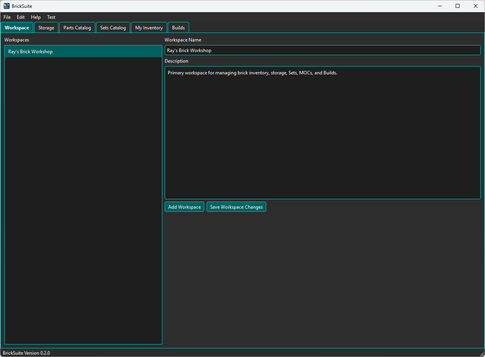
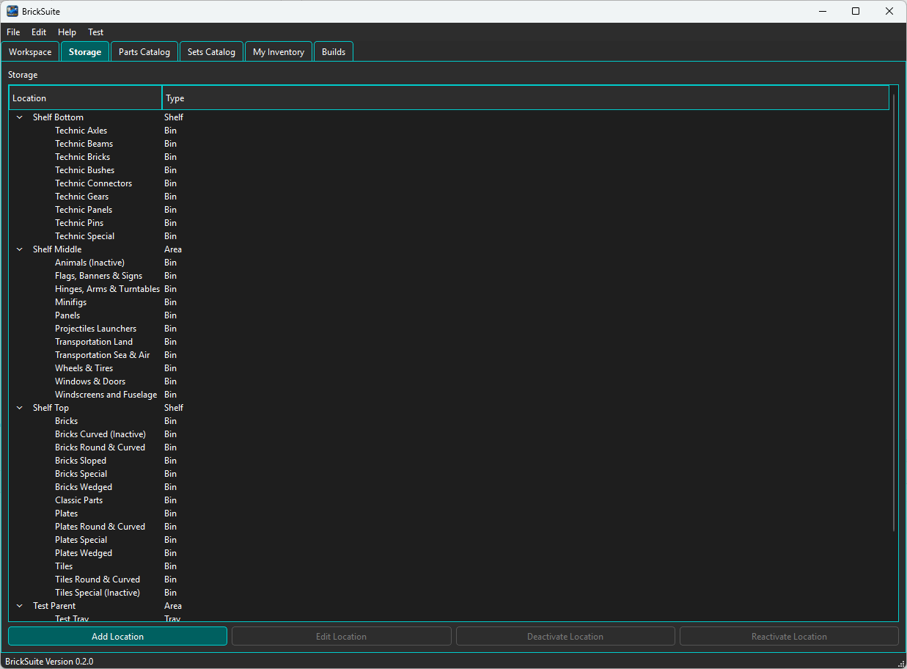
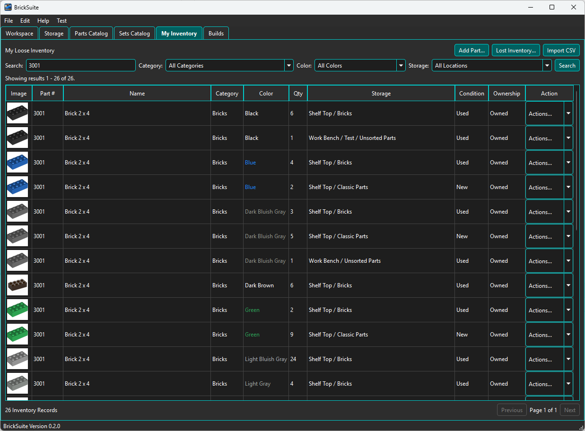

BrickSuite is designed to be the digital twin of your physical brick workshop. It keeps the logical information about your parts, storage, Sets, MOCs, and Builds connected to the way those items are actually organized and used.
A typical first-use workflow is:
A Workspace is the top-level container for the inventory, storage, and Build activity you manage in BrickSuite. Most users will begin with one primary Workspace, although the architecture supports additional Workspaces when separate collections or working environments need to be maintained.
Select a Workspace from the list on the left. Its name and description appear on the right. You can update either value and choose Save Workspace Changes to store the changes in the BrickSuite database.

Tip: Give the Workspace a description that explains what it represents. This is especially useful if you add additional Workspaces later.
The Storage page models where parts physically live. Create a hierarchy that matches your workshop rather than forcing your workshop to fit a predefined structure.
BrickSuite supports storage types including Area, Cabinet, Shelf, Case, Drawer, Bin, Tray, Compartment, and Divider. Parent locations organize the hierarchy, while inventory is placed in appropriate active leaf locations.

Build the hierarchy in a way that makes sense when you are standing in front of the real storage. The goal is for a BrickSuite location to lead you directly to the physical parts.
See Storage for detailed instructions on creating, organizing, editing, and deactivating storage locations.
My Inventory represents the loose parts currently available in the selected Workspace. BrickSuite tracks each inventory record by part, color, quantity, condition, ownership type, and storage location.
You can add parts directly from the Parts Catalog or import owned-parts CSV files exported from Rebrickable. Search and filters make it possible to narrow a large inventory by part information, category, color, or location.

The summary below the inventory table shows the number of matching inventory records and the total quantity represented by the current results.
See My Inventory and Rebrickable Import for the detailed inventory workflows.
The Parts Catalog and Sets Catalog provide locally stored Rebrickable reference data. They let you search and inspect parts and Sets without requiring a live API request for normal browsing.
From the Parts Catalog you can inspect a part and add it to inventory. From the Sets Catalog you can inspect Set information and use supported Set workflows to create Builds.
See Parts Catalog and Sets Catalog for more information.
A Build represents a Set or MOC that you want BrickSuite to manage. BrickSuite can load requirements, compare them with loose inventory, allocate available pieces, identify shortages, pull parts, complete the Build, and preserve the inventory history associated with those actions.
When you are ready to work with Sets and MOCs, continue with Builds.
BrickSuite stores its working data in SQLite. Use File → Backup Database regularly, especially before significant inventory changes or application upgrades. BrickSuite verifies a backup when it is created and also creates a pre-restore safety backup before replacing the live database during a restore.
See Backup / Restore for the complete workflow.
You now have the basic BrickSuite model:
Workspace → Storage → Inventory → Builds
Use the Contents panel on the left to explore each area in detail. You can also type a word or phrase into Search Help at any time. Press F1 from a supported BrickSuite page or dialog to open the Help topic associated with the area you are currently using.